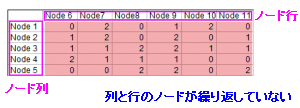

ネットワークプロット
Network-Plot

必要なデータ
Originは、ネットワークプロットを作図するために3種類の入力データタイプをサポートしています。
- 隣接行列
- 隣接行列は、有限グラフを表すために使用される正方行列です。行列の要素は、頂点のペアがグラフ内で隣接しているかどうかを示します。
- 接続行列
- 接続行列は、通常は接続関係と呼ばれる、2つのクラスのオブジェクト間の関係を示す論理行列です。
- 境界リスト
- 境界リストは、グラフをその境界リストとして表すために使用されるデータ構造です。この配置を使用して、マップにプロットします。
グラフ作成
元データを選択し、以下の方法のどちらかでplot_networkダイアログを開きます。
- メニューから作図：カテゴリカル：ネットワークと選択します。
plotnetwork ダイアログボックス
| データタイプ= 隣接行列
|
データタイプ= 接続行列
|
データタイプ= 境界リスト
|
|
|

|
|
|
|
|
|
行列の対角を含める
行列の対角線に格納されている自己フィードバック接続情報を含めるかどうかを指定します。このオプションはデータタイプが隣接行列の時にのみ使用可能です。
値の条件
このコントロールを使用して、ノード間のリンクをプロットするための行列値のフィルタを設定できます。条件に一致する値のみがリンクとしてプロットされます。
範囲と次の値の間以外では、開始と終了の編集ボックスが表示されます。 全てl以外の場合は、値の編集ボックスが表示されます。
上記の隣接行列の場合、行列の対角を含めるを選択し、値の条件をより小さい = 2に設定すると、2以上の値がフィルタされます。
重み付け
ノード間のリンクに重みを追加するかどうかを指定します。のチェックボックスをオンにすると、リンクの値を使用して、ノードのXY位置を定義するために使用される距離行列が計算されます。
有向
矢印を使用して各リンクの方向を示すかどうかを指定します。
選択をすると、有向: 行から列までまたは列から行までを決めることができます。
行列値モード
リンク方向を考慮せずに、2つのノード間のプロットの値を選択する方法を指定します。このオプションは、データタイプが隣接行列でのみ使用できますが、上記の有向チェックボックスが選択されている場合は使用できません。
- 上側：対角線の値を含め、行列の右上の三角形の値のみをプロットします。
- 下限：対角線の値を含め、行列の左下の三角形の値のみをプロットします。
- 最小：2つのノード間の値の最小値のみをプロットします。正方行列Aがある場合は、ノードiとノードjのリンクとして値min(A(i,j),A(j,i))をプロットします。
- 最大：2つのノード間の値の最大値のみをプロットします。正方行列Aがある場合は、ノードi とノードj のリンクとして値max(A(i,j),A(j,i))をプロットします。
- 正：2つのノード間の値の合計をプロットします。正方行列Aがある場合は、ノードi とノードj のリンクとして値A(i,j) + A(j,i)をプロットします。
ノード行/ノード列
ノード行とノード列を指定して、ノードの配置を設定します。
ノードラベル
境界リストデータの場合、入力ノードリンクがカテゴリーデータでない場合は、このオプションを使用してノードラベルを指定できます。
レイアウト
ノードの配置方法を指定します。Originは、次の8つのレイアウトをサポートしています。
- Fruchterman-Reingold：Fruchterman-Reingoldによる力指向レイアウトアルゴリズムを使用して、ノードを平面に配置します。
- Kamada-Kawai：バネの物理モデルに基づいて、ノードを平面または3D空間に配置します。
- MDS：グラフのノードで定義された距離行列の多次元尺度構成法です。このレイアウトを選択すると、行列を選択的に設定して、ノード間の距離を定義できます。
- ストレス：ストレスメジャー化に基づく力指向のグラフレイアウトです。
- 円：頂点IDの順序で、ノードを円上に配置しますシンプルに、各ノードを円に配置をします。順序はノード列の順序にすることができます。
- Pivot MDS：MDSと同じようですが、MDSに使用するピボットのセットはごくわずかです。MDSよりもかなり高速であるため、より大きなグラフに適用できます。
- スパースストレス：一連のピボットノードに基づく、より大きなグラフのストレスメジャー化です。
- ForceAtlas2：ForceAtlas2は、ネットワークの空間化に使用される他のアルゴリズムに近い力指向のレイアウトです。ForceAtlas2は、力指向のレイアウトです。ネットワークを空間化するために、物理システムをシミュレートします。ノードは荷電粒子のように互いに反発し、境界はバネのようにノードを引き付けます。これらの力は、バランスの取れた状態に収束する動きを生み出します。この最終構成は、データの解釈に役立つと考えられます。
さらに、カスタムを選択して、別のXY範囲でノードの位置を定義できます。
テンプレート
Network.otpu (EXEフォルダにインストールされています。)
Notes
- ネットワークプロットは、エンティティのセット間の相互接続を示しています。各エンティティはノードで表され、ノード間の接続はリンクで表されます。
- plot_networkダイアログでどのデータタイプが選択されていても、中間ワークシートplot_network#が作成され、リンク元とリンク先、リンクの重み、ノード名、ノードの場所が保存されます。
- データタイプが境界リストの場合、元ノード、接続先ノード、およびノードラベル列は、中間ワークシートで自動的にカテゴリーとして設定され、ソート順はデフォルトでソートなしになります（つまり、カテゴリーはソース列に表示される順序でリストされます）。
ノードとリンクをさらにカスタマイズするには、作図の詳細:の下のタブに移動します。